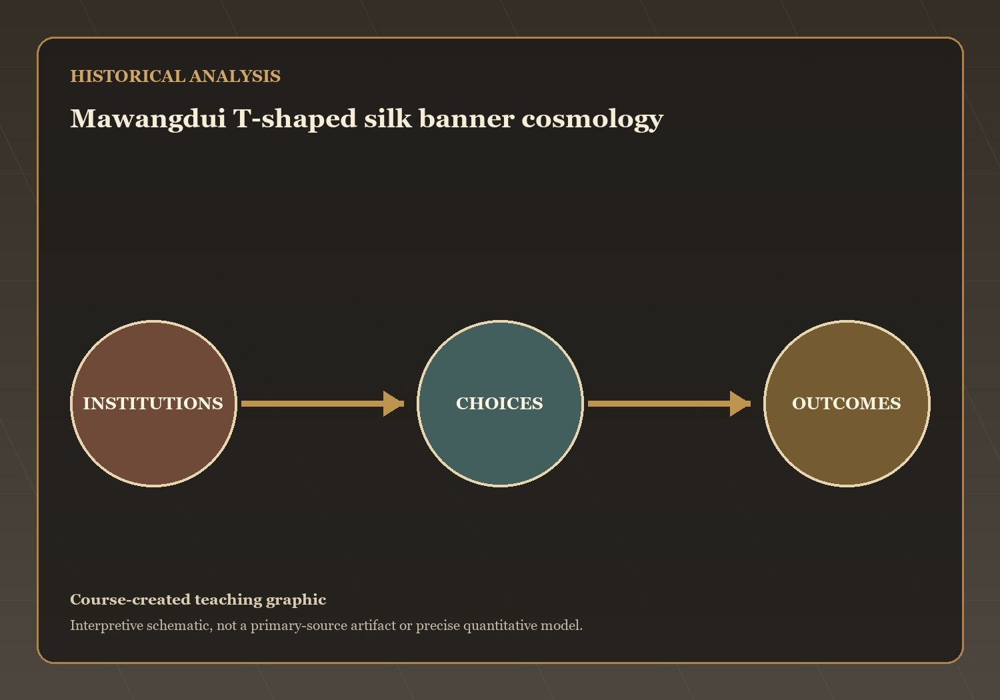
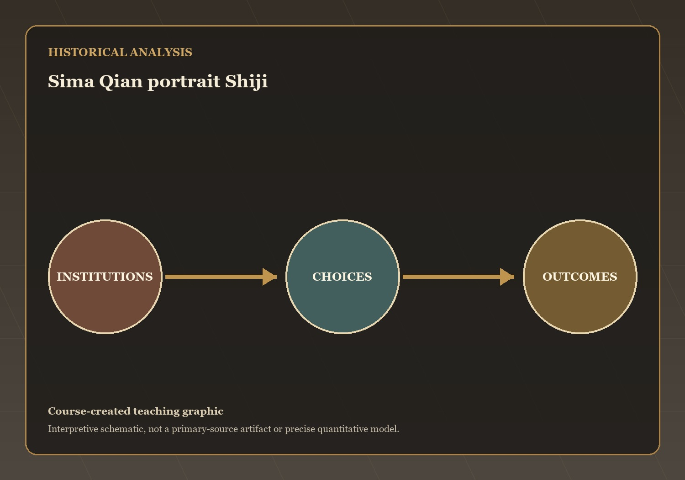
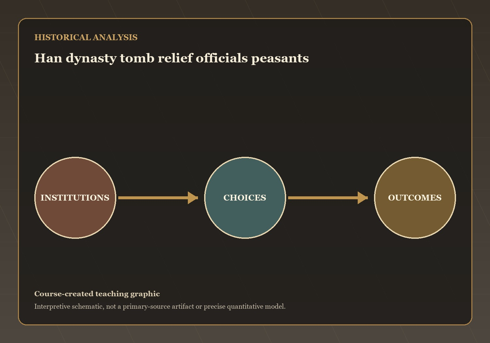
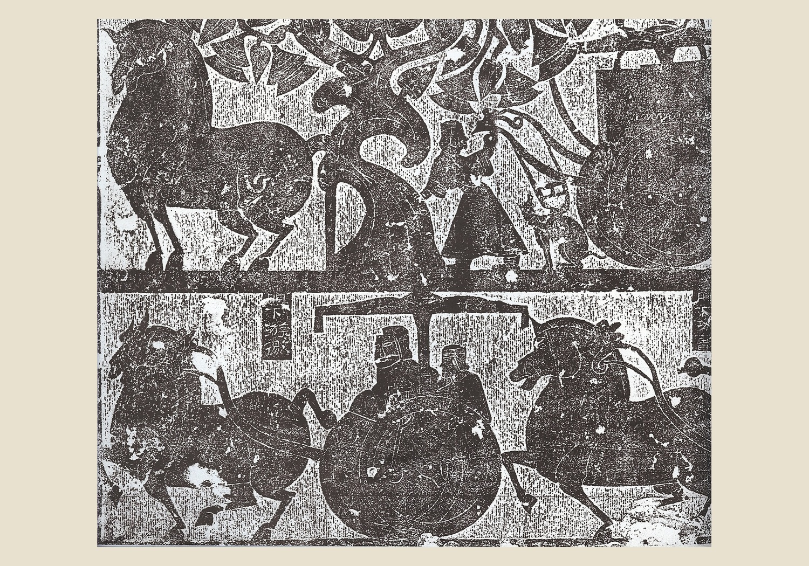
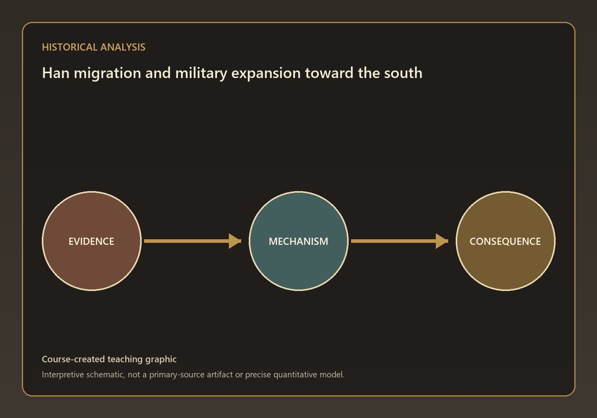

Questions and Problems
Mechanisms and Consequences
Lecture 3 covers what looks at first like five separate topics — cosmology, history-writing, social class, family, and frontier expansion. But they…
Q7 — evidence, mechanism, and consequence

Visual evidence for Q7
Han cosmology fused Confucian, Daoist, and Legalist ideas into a single correlative system in which the human and natural worlds mirrored each other through…
What mechanism best explains this outcome? State your answer to Q7 as a causal claim.
Q8 — evidence, mechanism, and consequence

Visual evidence for Q8
Sima Qian transformed history-writing from chronicle into analysis and moral judgment. His methodological innovations — research from documents and site visits, examination for veracity…
What mechanism best explains this outcome? State your answer to Q8 as a causal claim.
Q9 — evidence, mechanism, and consequence

Visual evidence for Q9
The Qin's destruction of the hereditary Zhou nobility created a social vacuum that the Han filled with new elites defined by wealth, land, and…
What mechanism best explains this outcome? State your answer to Q9 as a causal claim.
Q10 — evidence, mechanism, and consequence

Visual evidence for Q10
The Han family system fused state administration and Confucian ethics into a patrilineal structure organized around the authority of the family head, partible inheritance…
What mechanism best explains this outcome? State your answer to Q10 as a causal claim.
Q12 — evidence, mechanism, and consequence

Visual evidence for Q12
The Han expansion into Nam Viet was driven by migration along soft southern river valleys as much as by conquest, culminating in Emperor Wu's…
What mechanism best explains this outcome? State your answer to Q12 as a causal claim.
The open question for students: the Han exported Confucian culture to Vietnam by conquest, and the Vietnamese took the useful parts while resisting the…
The Silk Road — China Discovers the World — the next stage of the course narrative.
→ / Space: Next | ←: Previous | S: Notes | F: Fullscreen | O: Overview | ESC: Close popup